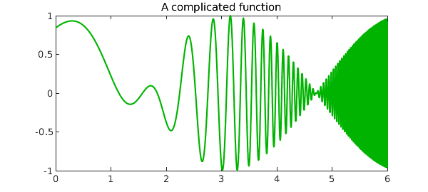
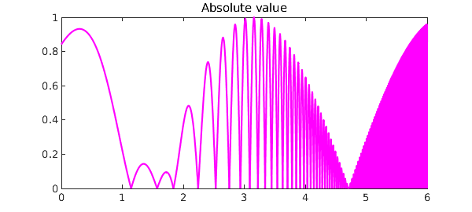
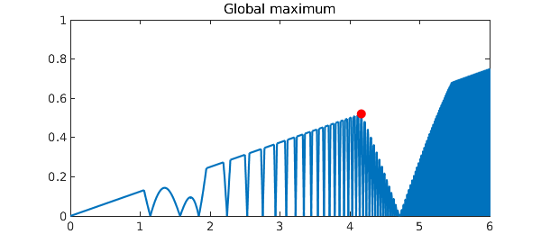
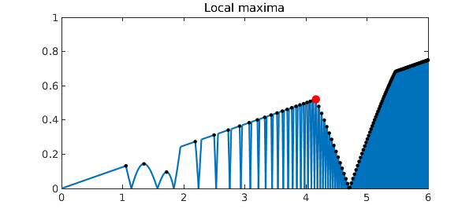

Here is the function cos(x)*sin(exp(x)) on the interval [0,6]:
tic, x = chebfun('x',[0 6]);
f = cos(x).*sin(exp(x));
length(f)
plot(f,'color',[0 .7 0],'numpts',10000)
FS = 'fontsize';
title('A complicated function',FS,14)
ans = 529

Here's its absolute value:
g = abs(f);
plot(g,'m','numpts',10000)
title('Absolute value',FS,14)

Here's the minimum of that function and x/8:
h = min(g,x/8);
plot(h,'numpts',10000)
title('Minimum with x/8',FS,14)

We can find the maximum over the interval [0,5] like this:
[maxval,maxpos] = max(h{0,5})
hold on, plot(maxpos,maxval,'.r','markersize',40)
title('Global maximum',FS,14)
maxval = 0.520496207016738 maxpos = 4.164759283173292

Let's add all the local extrema to the plot:
hp = diff(h);
extrema = roots(hp);
plot(extrema,h(extrema),'.k','markersize',6)
title('Local extrema',FS,14)

These computations showcase the fact that Chebfun optimization is global -- whether in the sense of finding a global extremum, or in the sense of globally finding all the local extrema.
They also showcase the treatment of discontinuities. To find extrema, Chebfun looks for zeros of the derivative. In some cases those are points where the derivative is continuous and passes through zero. In others, like the leftmost black dot in the plot above, they are points where the derivative jumps from positive to negative or vice versa.
Here is the time for this whole sequence of computations:
Total_time = toc
Total_time = 29.540320963999999